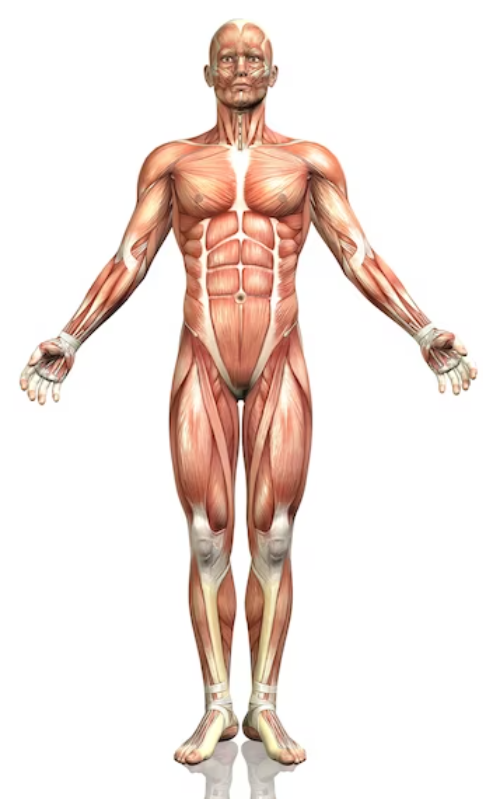

Índice
Descripción
La acromegalia es un trastorno hormonal que ocurre cuando la glándula pituitaria produce en exceso la hormona del crecimiento. Esto provoca un crecimiento exagerado de los huesos y tejidos del cuerpo, particularmente en las manos, pies y rostro.
Causas
La acromegalia es causada por un exceso de hormona de crecimiento, generalmente debido a un tumor benigno en la glándula pituitaria (adenoma hipofisario). En raras ocasiones, puede ser causada por tumores en otras partes del cuerpo.
Síntomas
Los síntomas incluyen agrandamiento de las manos y los pies, rasgos faciales pronunciados, dolores articulares, crecimiento de la mandíbula y lengua, y problemas respiratorios. También pueden ocurrir problemas metabólicos como la diabetes y presión arterial alta.
Pruebas y Exámenes
El diagnóstico de la acromegalia se confirma mediante pruebas de sangre para medir los niveles de hormona de crecimiento y el factor de crecimiento IGF-1. También se pueden realizar pruebas de imágenes como la resonancia magnética (RM) para detectar tumores en la glándula pituitaria.
Pruebas comunes para diagnosticar acromegalia
| Prueba | Descripción |
|---|---|
| Medición de IGF-1 | Prueba de sangre para medir los niveles del factor de crecimiento similar a la insulina-1 (IGF-1), que suele estar elevado en acromegalia. |
| Prueba de supresión de GH | Se mide la hormona del crecimiento después de una prueba de tolerancia a la glucosa oral para verificar si los niveles disminuyen adecuadamente. |
| Resonancia magnética (RM) | Imagen de alta resolución del cerebro para localizar y determinar el tamaño del tumor en la glándula pituitaria. |
| Radiografía de manos y pies | Imágenes para detectar agrandamiento de huesos, especialmente en las extremidades. |
Tratamiento
El tratamiento puede incluir cirugía para extirpar el tumor pituitario, medicamentos para reducir la producción de hormona de crecimiento o radioterapia. El enfoque dependerá del tamaño del tumor y de cómo responda a los medicamentos.
Expectativas
Con tratamiento, la mayoría de las personas con acromegalia pueden reducir sus síntomas y evitar complicaciones graves. Sin embargo, la detección y el tratamiento tempranos son clave para obtener los mejores resultados a largo plazo.
Cuerpo Humano
Haz clic en las áreas activas para aprender más sobre el cuerpo humano y sus partes.
